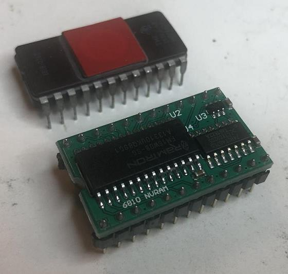
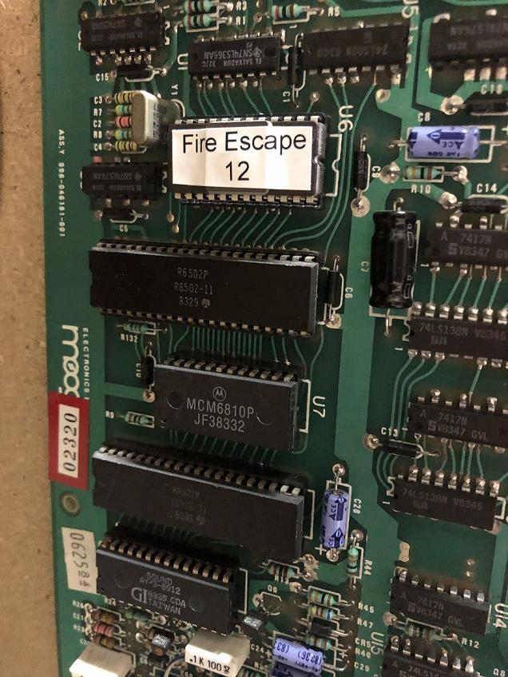
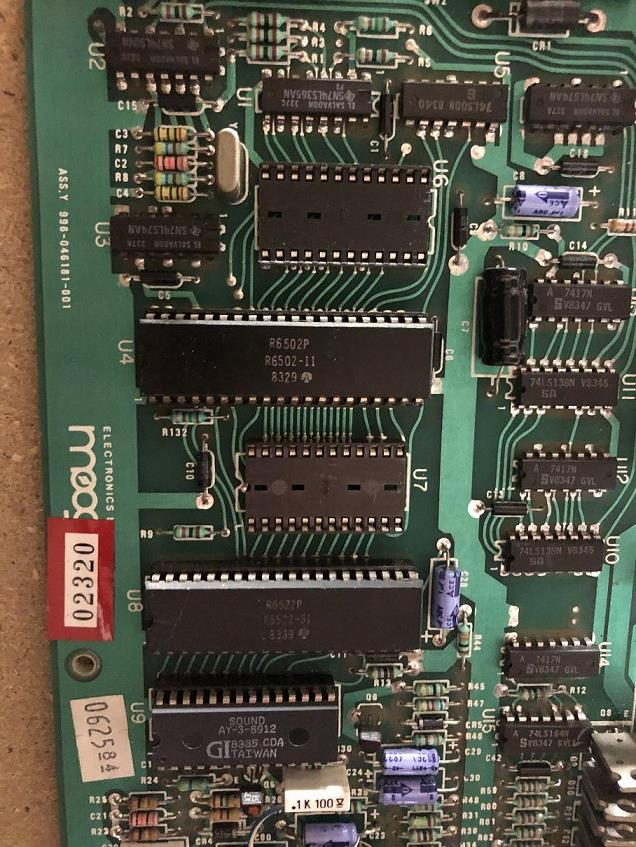
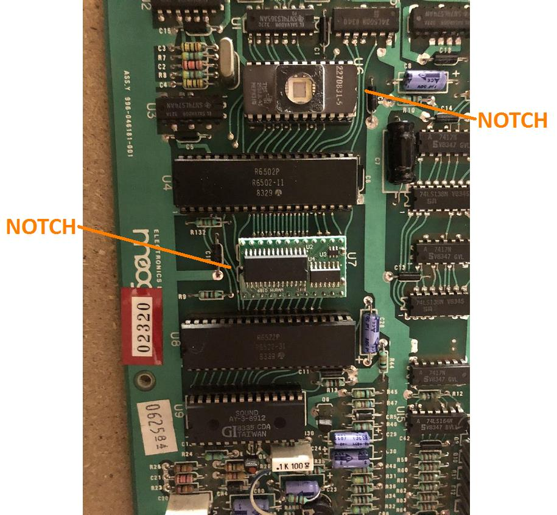
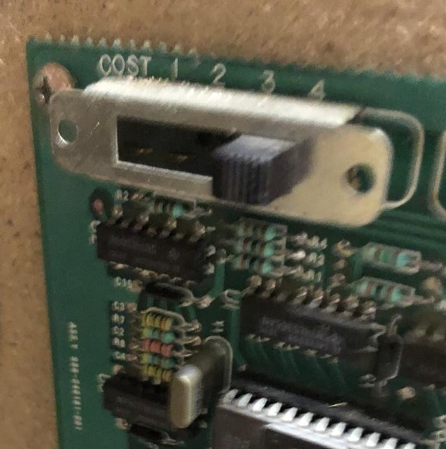

Fire Escape High Score Save
Stock Status: IN STOCK

This is a High Score Save for the Mech-Tronic / ICE skill game Fire Escape. This includes an FRAM based RAM replacement, which saves scores without a backup battery, as well as a modified ROM to prevent the high score from being cleared at power-up.
Features:
Plug-in replacement of 6810 RAM and 2532 ROM
Permanently saves highest score to date
Optional clear score with coin setting switch
Low cost
Easy installation
Ordering info
Assembled and tested 6810 NVRAM boards are $45 each.
Programmed and tested 2532 ROMs are $5 each.
Shipping is a flat $5 to the US for as many NVRAMs/ROMs as you order... actual shipping cost to the rest of the world.
Email me if you have any questions or if you'd like to order.

Installation/Configuration
Looking at your original PCB, you'll see the original ROM at U6 and original RAM at U7.

Carefully remove both U6 and U7.

Carefully install the new modified ROM into U6 (with the notch facing RIGHT) and the new NVRAM into U7 (with the notch facing LEFT).
Ensure all pins are aligned in the sockets before pushing into the sockets to avoid damaging the pins.
ENSURE THE CHIPS ARE INSERTED IN THE CORRECT ORIENTATION OR THEY WILL BE DAMAGED

To reset the high score to 0, slide the COST switch to 4 and turn the game on. Then turn the game off and slide the COST switch back to the desired 1, 2, or 3 coins.

NOTES:
-Install at your own risk. Make sure your game is unplugged before working on it. If you're not comfortable working with electronics, ask for help from someone that is.
-You'll need a small flathead screwdriver or chip lifter to remove the original chips. Be careful and gentle when removing.
-The new chips MUST be inserted in the correct direction, and with the pins carefully lined up in the socket to prevent damage.